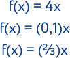
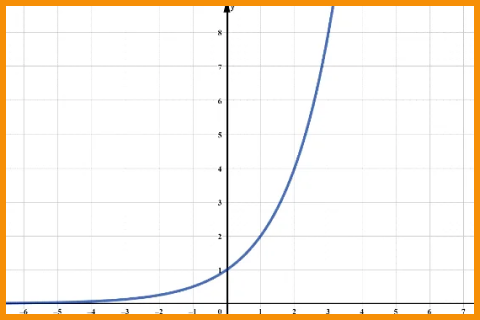

.png)
FUNÇÃO EXPONENCIAL
Função Exponencial é aquela que a variável está no expoente e cuja base é sempre maior que zero e diferente de um.
Essas restrições são necessárias, pois 1 elevado a qualquer número resulta em 1. As-
sim, em vez de exponencial, estaríamos diante de uma função constante.
Além disso, a base não pode ser negativa, nem igual a zero, pois para alguns expoen-
tes a função não estaria definida.
No exemplo abaixo, 4, (0,1)e ⅔ são as bases, enquanto x é o expoente.
GRÁFICO
O gráfico desta função passa pelo ponto (0,1), pois todo número elevado a zero é igual a 1. Além disso, a curva exponencial não toca no eixo x.
Na função exponencial a base é sempre maior que zero, portanto a função terá sempre imagem positiva. Assim sendo, não apresenta pontos nos quadrantes III e IV (imagem negativa).
Abaixo representamos o gráfico da função exponencial.
A função exponencial pode ser crescente ou decrescente.
Será crescente quando a base for maior que 1. Por exemplo, a função y = 2x éuma função crescente.
Para constatar que essa função é crescente, atribuímos valores para x no expoente da função e encontramos a sua imagem. Os valores encontrados estão na tabela ao lado.
Observando a tabela, notamos que quando aumentamos o valor de x, a sua imagem também aumenta. Abaixo, representamos o gráfico desta função.
Por sua vez, as funções cujas bases são valores maiores que zero e menores que 1, são decrescentes. Por exemplo, f(x) = (1/2)x é uma função decrescente. Calculamos a imagem de alguns valores de x e o resultado encontra-se na tabela abaixo.
Notamos que para esta função, enquanto os valores de x aumentam, os valores das respectivas imagens diminuem. Desta forma, constatamos que a função f(x) = (1/2)x é uma função decrescente.
Com os valores encontrados na tabela, traçamos o gráfico dessa função. Note que quanto maior o x, mais perto do zero a curva exponencial fica.
Para melhorar seus estudos...
Matemática pode ser um conteúdo difícil. Para aumentar seu aprendizado, acesse ao mapa mental e a playlist de vídeo aulas sobre este assunto:
Mapa mental playlist de videoaulas